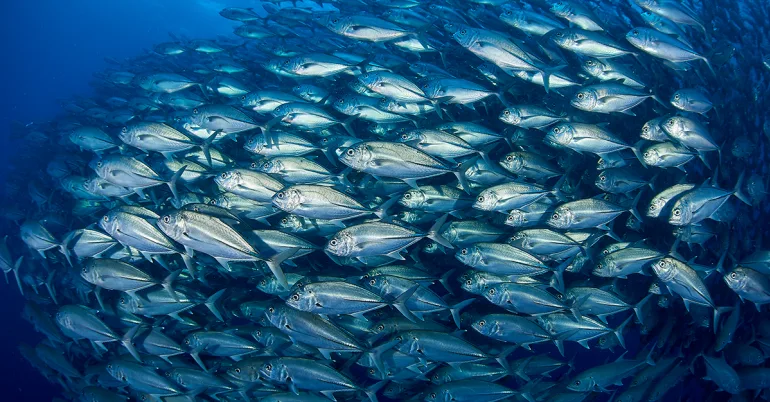
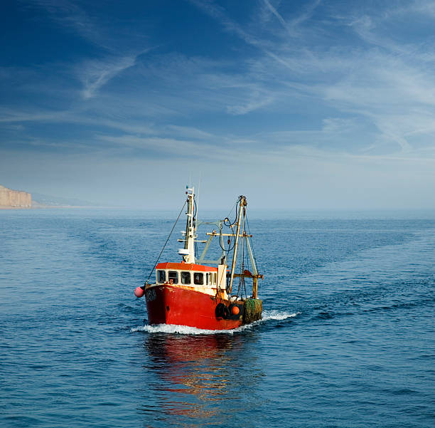
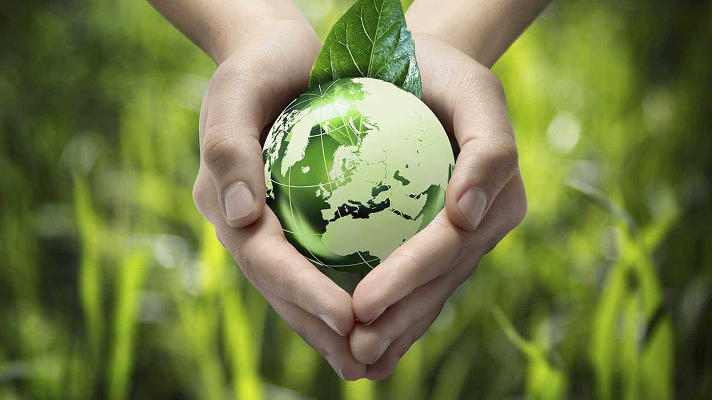

💧 Overfishing Crisis
Over 90% of the world's fish populations are either overfished or fully exploited. Sustainable eating helps prevent ocean depletion and protects marine biodiversity.

🐟 Trace Your Catch
Knowing where your fish comes from helps support ethical fishing. AquaBites connects you to traceable, sustainable sources right from ocean to table.

♻️ Eco-Friendly Choices
Choosing sustainable seafood reduces harm to ocean ecosystems. Small conscious decisions by consumers lead to large-scale environmental impact.

🍽️ Eat with Purpose
Informed seafood choices support both your health and the planet. Awareness is the first step toward creating a better food future.